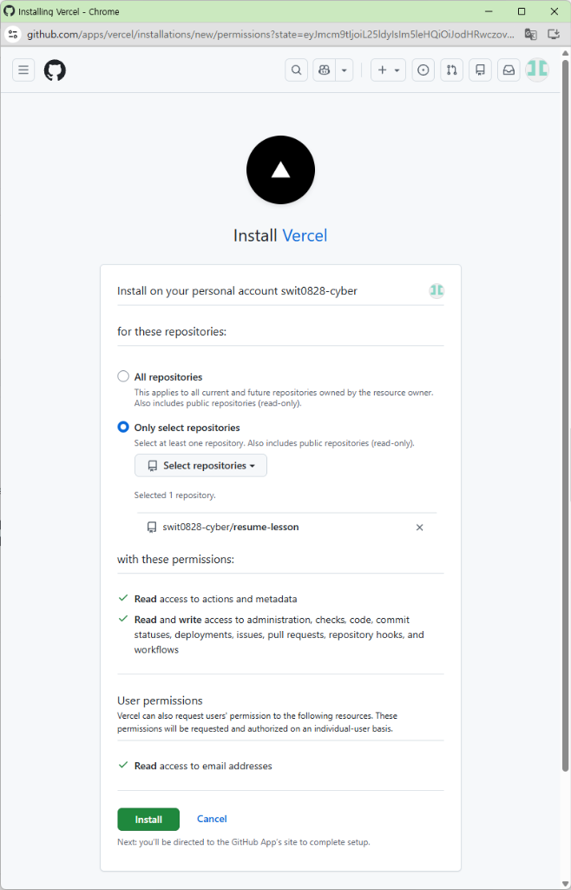
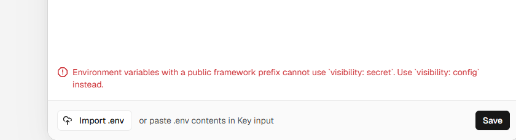

Section 3 · 실습 1단계
Supabase 1: 조직 및 프로젝트 생성
1. Organization 생성
Name에 닉네임 입력, Type: Personal, Plan: Free - $0/month 선택 후 [Create organization]
2. Region 인시던트 주의!
화면에
Incident in progress 경고가 뜨면 해당 리전 생성에 문제가 있을 수 있습니다. 드롭다운에서 Seoul (ap-northeast-2) 또는 Tokyo를 직접 지정하세요.
3. Enable automatic RLS 체크박스?
기본 체크 해제 상태 그대로 두셔도 무방합니다. 우리는 SQL 스크립트에서 직접 RLS와 정책을 완벽하게 선언할 것이기 때문입니다.

📷 1. New Organization (Free Plan 선택)

📷 2. Project 생성 (Seoul 리전 선택 & RLS 확인)
Section 3 · 실습 2단계
Supabase 2: 최신 API 키 복사 & SQL 테이블 생성
🔑 최신 UI: Publishable Key 복사
Supabase가
anon key를 Publishable key(공개 가능 키)로 명칭을 개편했습니다. sb_publishable_... 옆 복사 버튼을 누르세요. (아래의 Secret key는 절대 금지!)
-- SQL Editor에 복붙 후 [Run] 클릭!
create table if not exists todos (
id bigint generated by default as identity primary key,
title text not null,
is_completed boolean default false,
created_at timestamp with time zone default timezone('utc'::text, now()) not null
);
alter table todos enable row level security;
create policy "Public Access" on todos for all using (true) with check (true);
💡 .env에 바로 적용: 복사한
Project URL과 Publishable Key를 프로젝트의 .env 파일에 붙여넣습니다.

📷 3. 대시보드 홈의 [API Keys] 버튼

📷 4. Publishable key (sb_publishable_...) 복사
Section 4 · 배포 1단계
Vercel 배포 1: 무료 플랜 가입 & GitHub 레포 연동
1. Plan 선택: 무조건 Hobby ($0)
첫 화면에서 `I'm working on personal projects (Hobby)`를 체크해야 무료로 영구 사용 가능합니다. (Pro 선택 시 신용카드 결제 유도)
2. GitHub App 설치 & 권한 부여
`Import Git Repository`에서 [Install] 클릭 후, 보안을 위해 `Only select repositories`에서 방금 만든 `resume-lesson` 레포지토리만 체크하여 연동합니다.

📷 7. Hobby (무료) 플랜 선택 필수

📷 8. GitHub에서 레포지토리 권한 Install
Section 4 · 배포 3단계
Vercel 배포 3: Environments 함정과 Config vs Secret 원리
함정 1: `Environments` 팝업 (Pro 결제 유도?)
Settings의
👉 해결: 메인 사이드바의 `X= Environment Variables`로 가야 진짜 무료 환경변수 등록창이 나옵니다.
Environments를 누르면 '소문자만 가능', 'Upgrade to Pro' 팝업이 뜹니다. 이는 유료 스테이징 환경 기능입니다.👉 해결: 메인 사이드바의 `X= Environment Variables`로 가야 진짜 무료 환경변수 등록창이 나옵니다.
함정 2: `VITE_` 변수는 왜 무조건 Config인가?
VITE_ 접두사는 브라우저 JS 번들에 구워져 전 세계에 공개되는 변수입니다. Vercel은 공개될 변수를 `Secret`으로 감추는 착각을 막기 위해 무조건 `Config`를 강제합니다.👉
VITE_SUPABASE_URL, VITE_SUPABASE_ANON_KEY 둘 다 `Config`로 등록!

📷 11. 피해야 할 유료 Environments 팝업

📷 12. VITE_ 변수는 visibility: config 필수 에러

📷 13. 진짜 환경변수 메뉴에서 Config로 등록